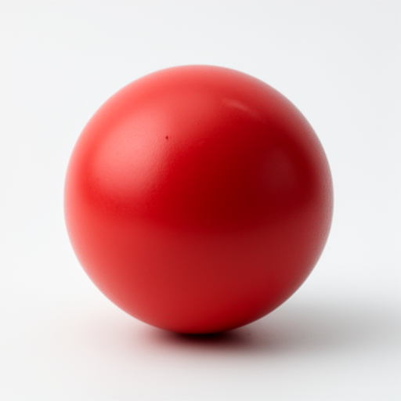

How many tokens can FLUX.2-dev actually follow? We tested it.
FLUX.2-dev follows additive instructions at every position within its 512-token window — including the very last content token before EOS. The only failure mode we found is contradicting earlier tokens. We initially assumed prompts should be kept under 400 characters — an unverified assumption based on an AI agent's assertion that we accepted without checking. After compressing 240 prompts and regenerating all of them, we saw no improvement. This experiment was built to understand why, and to find the actual limits.
A controlled, additive approach: start with a sphere, keep adding elements, see when the model stops listening.
Each tier adds new visual elements to the prompt. Every element was verified in the output image.

With 15+ elements rendering correctly at 432 tokens, we pushed to the boundary. Can instructions placed near — or at — the 512-token limit still be followed?
We placed "make the sphere BLUE" at different token positions to see where the model stops obeying. The sphere was originally described as red at token 3.
It's not position decay — it's conflict resolution. New elements work near the boundary. Contradictions don't. Early tokens win.
Can the model follow an additive instruction placed at the very last token? We added "rainbow" at progressively later positions in a 512-token prompt.
No attention decay whatsoever. The model follows additive instructions at every position in its 512-token window, including the very last content token. The control (T15c) confirms the rainbow was caused by the instruction, not coincidence.
No attention decay within the 512-token window. Additive instructions are followed at every position — including token 511, the absolute last content token before EOS. The entire window is fully utilized.
Hard truncation at 512 tokens. The diffusers pipeline enforces max_sequence_length=512. Anything past that boundary is invisible to the model. Instructions at token 516 had zero effect.
The only failure mode is contradiction. "Actually BLUE not red" at token 491 lost to the earlier "red" at token 3. When instructions conflict, early tokens win. But new, non-conflicting elements work everywhere in the window.
Characters are the wrong unit. We were measuring prompt length in characters and acting on an unverified assumption. Character-based prompt limits are meaningless — tokens are what matter, and the model handles all 512.
We compressed all 240 concept art prompts from ~263 tokens to ~80 tokens and regenerated every image — based on an unverified assumption from one of our AI agents that prompts degrade past 400 characters. We didn't check whether 400 characters was the right unit, whether the claim had a source, or whether our prompts were actually in the danger zone. Side-by-side comparison showed no quality improvement — because there was no degradation to fix. The wasted effort motivated this experiment: if the assumption was wrong, what are the actual limits?
A bigger lesson: a few minutes of research into the diffusers documentation would have revealed the 512-token max_sequence_length and the actual text encoder, saving hours of wasted effort. Always research before experimenting, and experiment before scaling.
Throughout this experiment, we assumed FLUX.2-dev uses T5-XXL as its text encoder. It doesn't. FLUX.2-dev uses Mistral-Small-3.2-24B-Instruct. Our tokenizer analysis — characters-per-token ratios, token count estimates — was measured against the wrong model. The behavioral findings (attention, contradiction) still hold because they test the model's actual output, but our token-counting methodology was flawed.
The 512-token truncation is enforced by the diffusers pipeline via max_sequence_length=512, which raises a hard ValueError if exceeded. This is documented in the diffusers source code. HuggingFace discussion #43 from 2024 explains the exact behavior. A five-minute search would have answered the truncation question without running a single image generation.
We didn't research the encoder. We assumed T5-XXL without checking. The actual encoder (Mistral) has different tokenization characteristics.
We didn't read the diffusers docs. The 512-token limit is a documented parameter, not a discovery. We could have found it in minutes.
We trusted an AI agent's assertion as fact. The original "400 character limit" claim came from an AI review agent. We never asked for a source, never verified it, and built an entire compression pipeline on it.
The truncation limit was documented. The behavioral questions were not.
No attention decay within the window. No public documentation we found addresses whether FLUX.2-dev's attention degrades at later token positions. Our progressive tests (T1–T15b) demonstrate it does not. Additive instructions at token 511 are followed just as faithfully as at token 3.
Contradiction vs. addition at late positions. The conflict resolution behavior — early tokens winning when instructions contradict — is not documented in the diffusers docs or HuggingFace discussions we reviewed. This is a practical finding for anyone writing long prompts.
Visual proof at the boundary. The T15b result (rainbow visible at token 511) provides concrete evidence that the full 512-token window is utilized, not just tolerated. This goes beyond "the model accepts 512 tokens" to "the model pays attention to all 512 tokens."